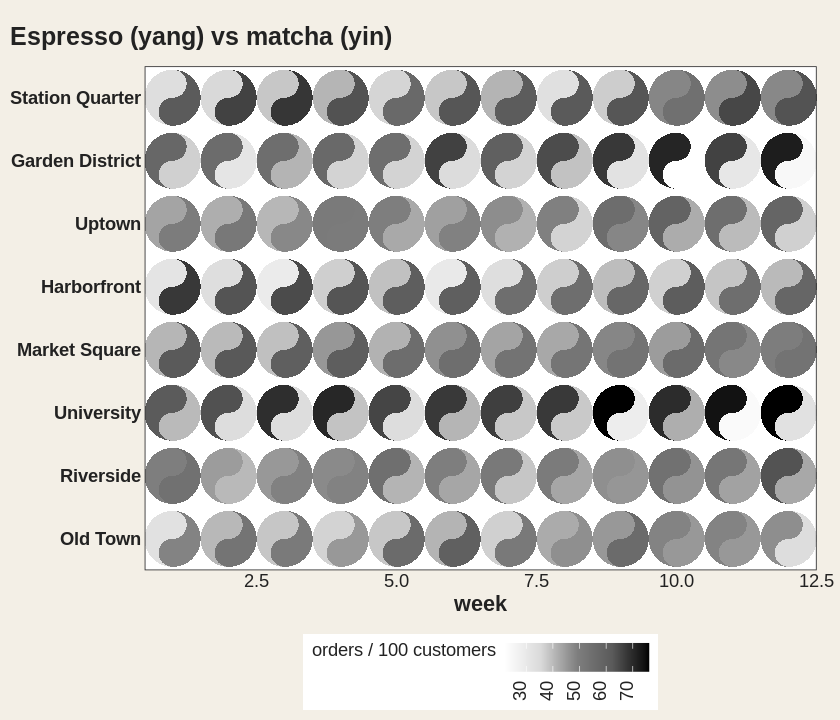
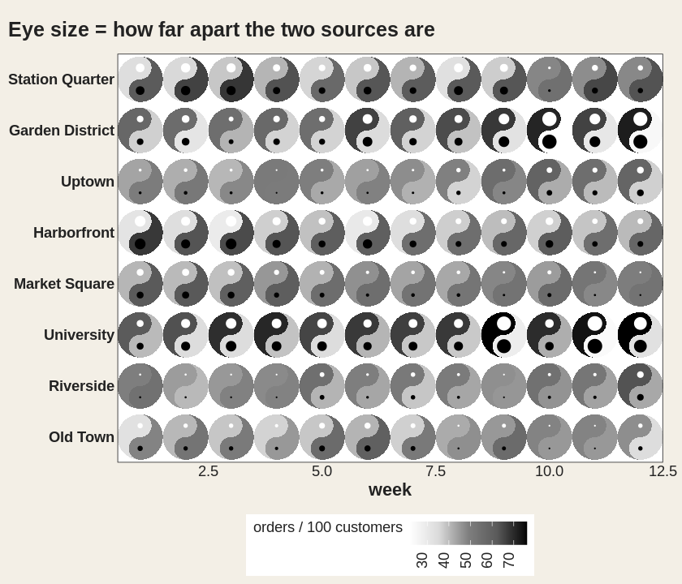
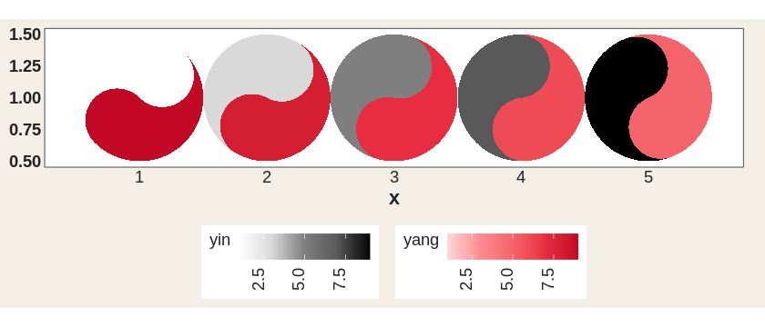
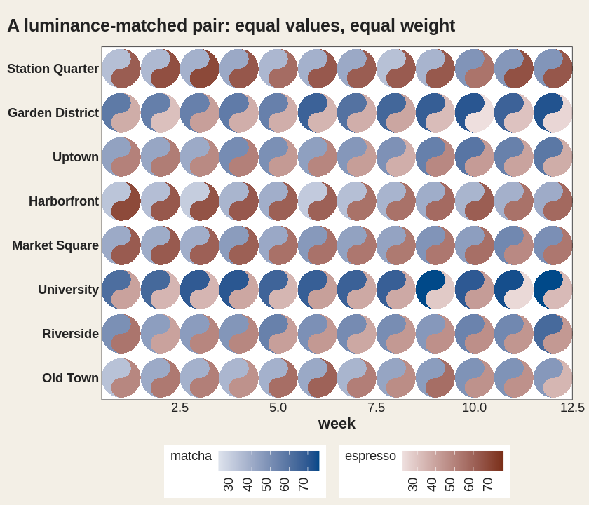
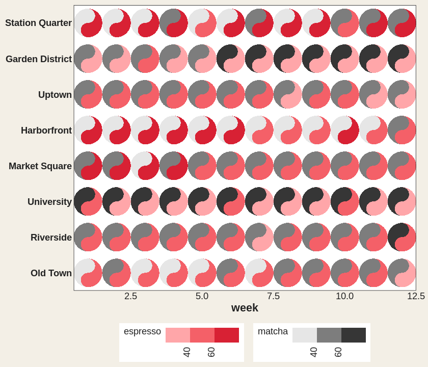

ggtaichi is a ggplot2 extension that compares data from two sources on a single grid of taichi (yin-yang) diagrams. A regular heat map made with geom_tile() encodes three dimensions (the x, y position and one value); geom_taichi() turns every cell into a taichi symbol whose two interlocking fish are filled by two sources at once, so four dimensions are expressed on one plot – and with the optional data-driven eyes, up to six, plus rotation for a seventh and a computed comparison between the two sources for an eighth.
Installation
Install the released version from CRAN:
install.packages("ggtaichi")Or the development version from GitHub with:
# install.packages("devtools")
devtools::install_github("PursuitOfDataScience/ggtaichi")Anatomy of a taichi
Each symbol is a circle split by an S-curve into two interlocking fish. The yang (light) fish is shaded by one source and the yin (dark) fish by the other, each on its own gradient. By default there are no decorative dots – every drop of ink is data – and the classic eyes, when you enable them, are data channels too (see below).
library(ggtaichi)
library(ggplot2)
one <- data.frame(x = 1, y = 1, google = 7, twitter = 3)
ggplot(one, aes(x, y)) +
geom_taichi(yin = twitter, yang = google) +
coord_fixed() +
theme_taichi()
A clear, small grid
The built-in pitts_tg dataset holds the 30-week COVID-related Google and Twitter incidence rates for 9 categories in the Pittsburgh Metropolitan Statistical Area. With many weeks the symbols shrink, so it is often easier to read a slice. Here are the first six weeks, where each taichi is big enough to compare the two halves at a glance.
pitts_small <- subset(pitts_tg, week <= 6)
ggplot(pitts_small, aes(x = week, y = category)) +
geom_taichi(yin = Twitter, yang = Google) +
theme_taichi() +
ggtitle("Pittsburgh: Google (yang) vs Twitter (yin), weeks 1-6")
The legend titles default to the column names you supply. Note how Covid and Masks lean dark (high Twitter) while staying pink (moderate Google).
Your own gradients
Each fish gets its own gradient, and any extra argument is passed straight to ggplot2::scale_fill_gradientn().
ggplot(pitts_small, aes(x = week, y = category)) +
geom_taichi(
yin = Twitter, yin_name = "Twitter (%)",
yin_colors = c("#deebf7", "#3182bd", "#08306b"),
yang = Google, yang_name = "Google (%)",
yang_colors = c("#fee6ce", "#e6550d", "#7f2704")
) +
theme_taichi()
Comparing places
Because geom_taichi() is an ordinary layer, faceting just works. The states_tg dataset repeats the same measurements across four states; showing two of them over a handful of weeks keeps the glyphs large and legible.
two_states <- subset(states_tg, state %in% c("New York", "Texas") & week <= 6)
ggplot(two_states, aes(x = week, y = category)) +
geom_taichi(yin = Twitter, yang = Google) +
facet_wrap(~ state, ncol = 1) +
remove_padding(x = "c", y = "d") +
theme_taichi() +
ggtitle("New York vs Texas, weeks 1-6")
Eyes that carry data
eyes = TRUE draws the classic taichi dots, each centred in its own fish’s head. The eye arguments accept a constant or a data column: mapped eye sizes (rescaled to sensible radii) and colours make the glyph a genuine six-dimensional mark – x, y, two fills, two eyes.
quad <- data.frame(
x = c(1, 2, 1, 2),
y = c(2, 2, 1, 1),
yin = c(3, 5, 7, 9),
yang = c(9, 7, 5, 3),
reach = c(10, 40, 25, 5),
quality = c(2, 1, 4, 8)
)
ggplot(quad, aes(x, y)) +
geom_taichi(yin = yin, yang = yang,
eyes = TRUE,
yin_eye_size = reach,
yang_eye_size = quality,
limits = c(0, 10)) + # shared limits keep the palest fish visible
coord_fixed() +
theme_taichi() +
ggtitle("Eye sizes encode a 5th and 6th variable")
Rotation
angle rotates each glyph by a constant or by a column, so orientation can encode a directional or temporal variable – and, combined with gganimate, produces the iconic spinning taichi (see vignette("animations")).
rot <- data.frame(x = 1:4, y = 1, yin = 1:4, yang = 4:1,
turn = c(0, 45, 90, 135))
ggplot(rot, aes(x, y)) +
geom_taichi(yin = yin, yang = yang, angle = turn, eyes = TRUE,
limits = c(0, 5)) +
coord_fixed() +
theme_taichi()
Categorical fills
Factor, character, and logical columns now get a discrete fill scale automatically (v0.1.0 could only draw continuous values); computed expressions like factor(week) work too, and yin_scale / yang_scale accept any custom fill scale.
disc <- data.frame(
x = c(1, 2, 1, 2),
y = c(2, 2, 1, 1),
method = factor(c("A", "B", "C", "A")),
outcome = factor(c("win", "loss", "win", "loss"))
)
ggplot(disc, aes(x, y)) +
geom_taichi(yin = method, yang = outcome) +
coord_fixed() +
theme_taichi() +
ggtitle("Discrete yin & yang")
One legend, two fish
When both sources share units, shared_legend = TRUE puts them on a single scale and a single legend (shared_limits = TRUE aligns limits while keeping separate palettes). The bundled synthetic cafes_tg data – espresso vs matcha orders across eight neighbourhoods – is made for it:
ggplot(cafes_tg, aes(x = week, y = neighbourhood)) +
geom_taichi(yin = matcha, yang = espresso,
shared_legend = TRUE,
yin_name = "orders / 100 customers") +
remove_padding() +
theme_taichi() +
ggtitle("Espresso (yang) vs matcha (yin)")
The building blocks geom_yin_fish() / geom_yang_fish() are exported for fully manual scale control, and each layer is drawn as one batched polygon – a 1200-cell grid renders about 15x faster than the per-cell grob building of v0.1.0, pixel-for-pixel identically.
New in 0.3.0: how much bigger, not just which
Two fish sharing one position is a superposition comparison. It is very good at “are these similar?” and “which is bigger here?”, and it simply cannot answer “by how much?” – for that the relationship has to be computed and drawn. explicit does that, turning the difference (or ratio, log ratio, or standardised difference) into a third channel of the same mark.
The default channel is eye size, because the eyes already exist and are visually subordinate to the fills: the two fish keep carrying the two sources while the eye carries the gap. A cell where the sources agree exactly gets no eye, so a plain glyph means agreement.
ggplot(cafes_tg, aes(x = week, y = neighbourhood)) +
geom_taichi(yin = matcha, yang = espresso,
shared_legend = TRUE,
yin_name = "orders / 100 customers",
explicit = "difference") +
remove_padding() +
theme_taichi() +
ggtitle("Eye size = how far apart the two sources are")
explicit_channel = "angle" is the most accurate option: direction is read far more precisely than shading, so an upright glyph means the two sources agree and the lean shows which way and how far. "border" and "radius" are the other two.
tilt <- data.frame(x = 1:5, y = 1, yin = c(1, 3, 5, 7, 9), yang = 9:5)
ggplot(tilt, aes(x, y)) +
geom_taichi(yin = yin, yang = yang, shared_limits = TRUE,
explicit = "difference", explicit_channel = "angle") +
coord_fixed() +
theme_taichi()
And when the glyph is not the right chart for the question, geom_taichi_diff() draws the same statistic as a diverging heatmap, while taichi_summary() returns it as a table:
head(taichi_summary(cafes_tg, yin = matcha, yang = espresso,
x = week, y = neighbourhood), 4)## x y yin yang difference ratio log_ratio z dominant rank
## 1 1 Old Town 32.8 48.5 -15.7 0.6762887 -0.5642889 -1.3891789 espresso 55
## 2 2 Old Town 40.5 52.9 -12.4 0.7655955 -0.3853458 -1.1336049 espresso 66
## 3 3 Old Town 38.4 50.9 -12.5 0.7544204 -0.4065593 -1.1321353 espresso 63
## 4 4 Old Town 36.6 45.2 -8.6 0.8097345 -0.3044791 -0.7762886 espresso 72New in 0.3.0: palettes you can check
The two ramps are compared against each other, so they have to be matched: if one spans a wider luminance range than the other, equal values do not read as equal ink and one fish looks heavier wherever the data says the two sources are level. That makes palette pairing a correctness question, and taichi_check_palette() answers it with numbers. Run on the package’s own defaults, it fails them:
## <ggtaichi palette check>
##
## step yin L C yang L C dL
## 1 #FFFFFF 100.0 0.0 #FED7D8 89.2 14.5 10.8
## 2 #EBEBEB 93.0 0.0 #FFB2B3 79.8 30.2 13.2
## 3 #D8D8D8 86.3 0.0 #FE8C91 70.8 46.6 15.6
## 4 #AAAAAA 69.6 0.0 #F9787D 65.8 53.9 3.8
## 5 #7F7F7F 53.2 0.0 #F4636B 61.0 61.4 -7.8
## 6 #6B6B6B 45.2 0.0 #EE4B54 55.9 70.0 -10.7
## 7 #595959 37.8 0.0 #E62C3F 50.7 78.1 -12.8
## 8 #2D2D2D 18.5 0.0 #D41D31 45.8 77.1 -27.3
## 9 #000000 0.0 0.0 #C10724 40.6 75.7 -40.6
##
## largest luminance mismatch : 40.6 L* (tolerance 5.0)
## largest chroma mismatch : 78.1
## how far apart the ramps stay (median distance, step for step)
## normal 27.2
## deutan 20.9
## protan 12.7 (much worse than normal vision)
## tritan 28.4
##
## Verdict: FAIL
## the two ramps do not share a luminance trajectory, so equal
## values do NOT read as equal ink and one fish will appear to
## dominate. Consider `palette = "balanced"` or `taichi_palette_pair()`.palette = "balanced" is a pair built to be matched — same luminance and chroma trajectory, different hue — and there are presets for viridis-family, ColorBrewer, diverging and greyscale-safe pairs, plus taichi_palette_pair() to build your own. The defaults are unchanged, so no existing figure moves.
ggplot(cafes_tg, aes(x = week, y = neighbourhood)) +
geom_taichi(yin = matcha, yang = espresso,
palette = "balanced", shared_limits = TRUE) +
remove_padding() +
theme_taichi() +
ggtitle("A luminance-matched pair: equal values, equal weight")
New in 0.3.0: binned fills for dense grids
Reading a value off a continuous luminance ramp is the least accurate perceptual task there is, and it gets worse as a grid grows. Matching a patch to one of five labelled bins is much closer to a categorical lookup, and shared_limits now pushes its limits into the scales you supply, so both fish share one set of breaks and equal values land in the same bin.
ggplot(cafes_tg, aes(x = week, y = neighbourhood)) +
geom_taichi(yin = matcha, yang = espresso,
yin_scale = scale_taichi_yin_binned(n.breaks = 4),
yang_scale = scale_taichi_yang_binned(n.breaks = 4),
shared_limits = TRUE) +
remove_padding() +
theme_taichi()
New in 0.3.0: hover for the exact numbers
Fill is an imprecise channel by nature, so the honest fix is to give the reader a second, accurate route to the values rather than to pretend otherwise. interactive = TRUE makes the fish ggiraph grobs, so ggiraph::girafe() turns the plot into a widget whose tooltips carry both values and their difference:
p <- ggplot(cafes_tg, aes(x = week, y = neighbourhood)) +
geom_taichi(yin = matcha, yang = espresso, interactive = TRUE,
data_id_by = "source") +
theme_taichi()
ggiraph::girafe(ggobj = p)data_id_by = "source" is the interesting one: hovering any yin fish highlights the yin fish in every cell, temporarily turning the superposition display into a single-source one. A live version is in the gallery.
Legend keys are now small taichi symbols too, and the geoms follow ggplot2 4.0 themes, so a dark theme(geom = element_geom(ink = ..., paper = ...)) no longer leaves the fallback fish invisible.
Animation
The taichi is a cyclical symbol, so motion suits it: geom_taichi() composes cleanly with gganimate – turn a third variable into animation frames instead of an axis, or spin the glyphs via angle. Full recipes live in vignette("animations").
See vignette("ggtaichi") for the full tour, and the gallery for more looks.
Acknowledgement
ggtaichi is a spinoff of the ggDoubleHeat package, which introduced the idea of folding two data sources into a single reformed heat map. ggtaichi takes that two-scale design and re-imagines the per-cell glyph as a taichi diagram.